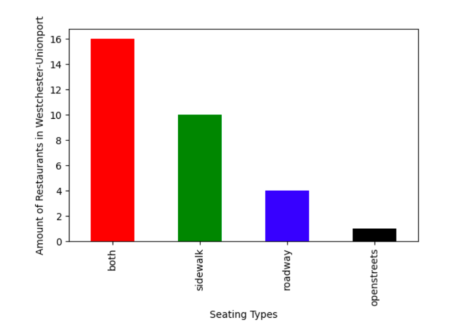

ZIP codes in this neighborhood include: 10461, 10462, 10472, and 10473.
These 4 ZIP codes…
- contain about 250,000 people…
o 28% of whom are white.
o 27% of whom are Black.
o 29% of whom are Hispanic or Latino.
o 9% of whom are Asian.
- contain about 91,000 occupied housing units…
o 75% of which are renter-occupied.
o 25% of which are owner-occupied
o 65% of which are family households.
o 35% of which are non-family households.
There are many qualities that make a neighborhood a desirable place for outdoor dining according to rankings, such as low crime rates, multiple forms of transportation, popularity, variety of eateries, and affordability. After deliberation, our team has determined that the most important factor in considering a neighborhood’s standard for outdoor dining are safety, accessibility, and diversity. Safety is a basic priority on considering whether or not the trip into a neighborhood is worth it in the first place. After the decision to enter the neighborhood has taken place, patrons consider whether they are able to, based on ease of transportation, sociocultural and economic approachability, and convenience. Finally, diversity in cuisine brings in the greatest number and broadest range of individuals.
Westchester-Unionport follows the patterns of restaurants located in the Bronx area for the most part. High rates of both sidewalk and roadway seating availability, and if the restaurant chose only one or the other, the rates of the sidewalk seating is much higher than the rate of the roadway seating. However, something unique in particular about this neighborhood that is not seen in other Bronx neighborhoods is the availability for open street dining. This availability creates a great environment for the restaurants, as it increases the space available for the customers and overall increases the enjoyment for the customers.
